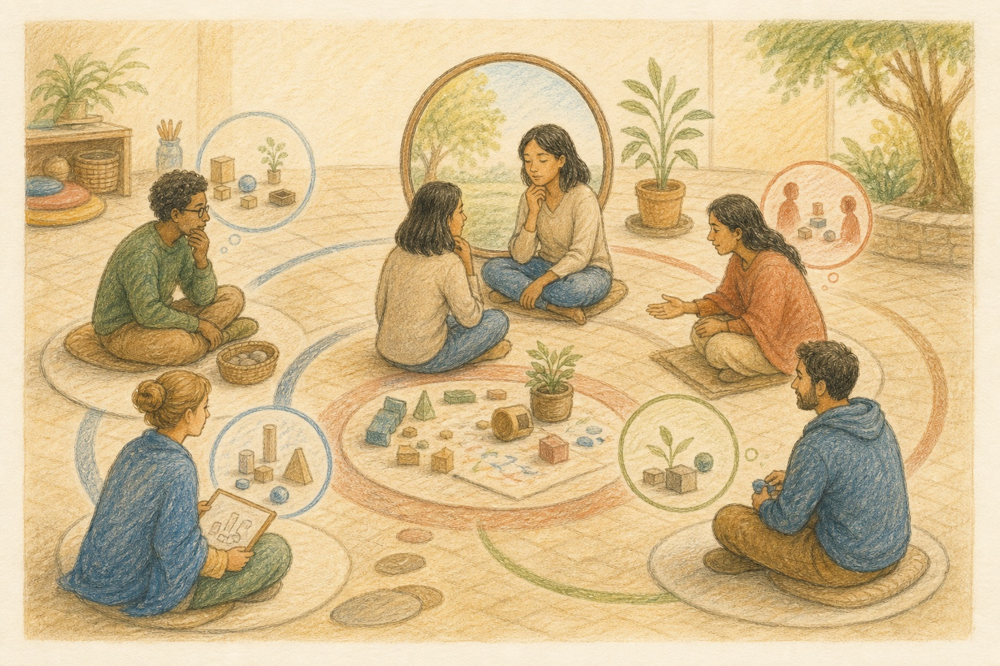

CoreXformer Program
Understanding the Experience
Pause. Observe. Understand. Respond.
A reflective experiential learning program that helps participants understand what happened before they react to it.

CoreXformer Program
Pause. Observe. Understand. Respond.
A reflective experiential learning program that helps participants understand what happened before they react to it.

People often react to situations before fully understanding what is happening. Assumptions, emotions, past experiences and time pressure can influence how an individual or team interprets a challenge.
This program helps participants pause, observe the situation and separate:
It develops the ability to learn from an experience instead of simply moving on from it.
The program helps individuals:
The individual begins to create a space between an event and their response.
The program helps teams and organisations:
From immediate reaction to conscious understanding.